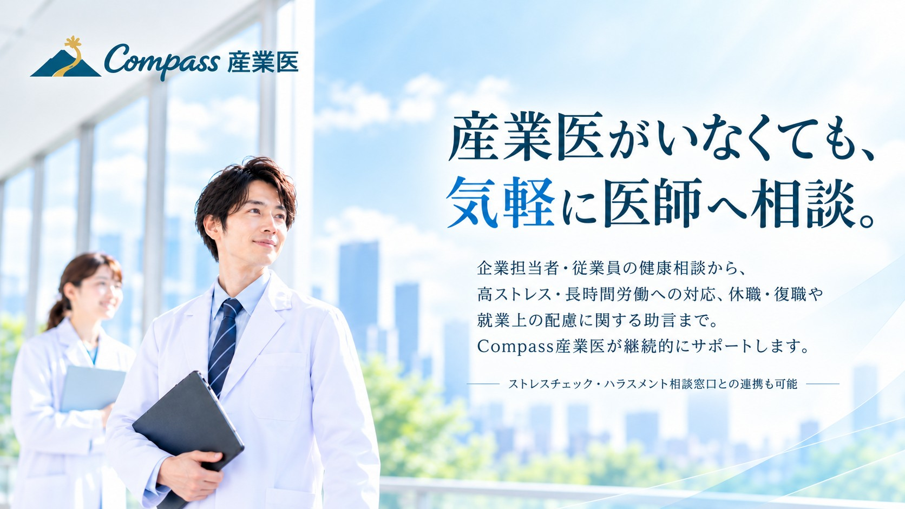

産業医が身近にいない企業の健康管理。専門家に相談できると安心です。
体調不良やメンタルヘルスの相談を、誰に確認すればよいかわからない。
復職時の配慮や働き方について、医師の意見を聞きたい。
過重労働や高ストレス者への対応を、適切に進めたい。
産業医の選任義務がない規模でも、必要な支援だけ活用したい。
ストレスチェックや従業員相談の窓口をまとめて整備したい。
職場の健康課題に合わせた、産業医による研修・講話を相談したい。
企業担当者からのご相談にも、従業員に関する面談にも対応します。
※法定面接指導、医師意見書等は、個別の事情・必要資料・対応範囲を確認して実施します。診断・治療を提供するサービスではありません。
※休職・復職に関する面談・医学的意見の提供は、病状や相談内容、必要な評価の範囲によって対応できない場合があります。事前に内容を確認し、対応可否をご案内します。必要に応じて主治医・専門医等への相談をご案内することがあります。
産業医の相談体制だけでなく、ストレスチェックとハラスメント相談窓口もセットでご案内。ポルトレイルが企業との調整窓口となり、専門家への相談をつなぎます。
法定の嘱託産業医選任が必要な企業についても、対応地域や巡視・法定業務の条件を確認して個別にご案内します。
まずは必要な相談体制を整えたい企業へ。
産業医に継続的に相談できる体制を整えたい企業に。
まず半年から導入し、運用を確かめたい企業に。
※両プランともストレスチェック・ハラスメント相談窓口付き。提供範囲や契約条件は個別にご案内します。法定の嘱託産業医契約、訪問・巡視等は、実施地域や法定業務の条件に応じて個別にお見積もりします。
| 当社ストレスチェックをご契約中の企業 | 30,000円／30分 |
| ハラスメント相談窓口のみご契約中の企業 | 40,000円／30分 |
| 当社サービスをご契約されていない企業 | 50,000円〜／30分 |
※いずれも税別・オンライン面談の参考価格です。面談の目的、事前確認、意見書の有無、必要な対応により金額が変動する場合があります。お申し込み前にお見積もりします。
はい。法定の産業医選任義務がない企業でも、企業担当者や従業員に関する健康相談を気軽にご相談いただけます。
はい。Compass産業医には、ストレスチェックとハラスメント相談窓口がセットになっています。具体的な運用範囲や実施体制については、企業の状況に合わせてご案内します。
休職・復職に関する面談や、就業上の配慮についての医学的な助言・意見書作成をご相談いただけます。ただし、病状や相談内容、必要な医学的評価の範囲によっては対応できない場合があります。事前に内容を確認のうえ、対応可否と費用をご案内します。なお、最終的な就業上の措置は企業が判断します。
はい。法定面接指導を含めてご相談いただけます。必要な情報や医師の対応範囲、実施までの日程を確認してご案内します。
はい。オンライン30分を目安に、ストレスチェック契約企業は30,000円、ハラスメント相談窓口のみの契約企業は40,000円、当社未契約企業は50,000円からご案内しています（いずれも税別）。内容に応じて金額が変わる場合があります。
はい。テーマ、参加人数、実施方法などを伺い、対応可能な医師や内容をご提案します。料金は個別にお見積もりします。
はい、産業医の選任・嘱託産業医契約もご相談いただけます。対応地域、職場巡視の体制、衛生委員会への関与など法定業務の実施条件を確認したうえで、個別にご提案します。なお、月額3万円の基本オンライン相談サービスだけで、法定の産業医選任要件を満たすものではありません。
産業医がいない、社員の健康相談が増えている、制度対応に不安がある。
そんな段階からでも、お気軽にご相談ください。